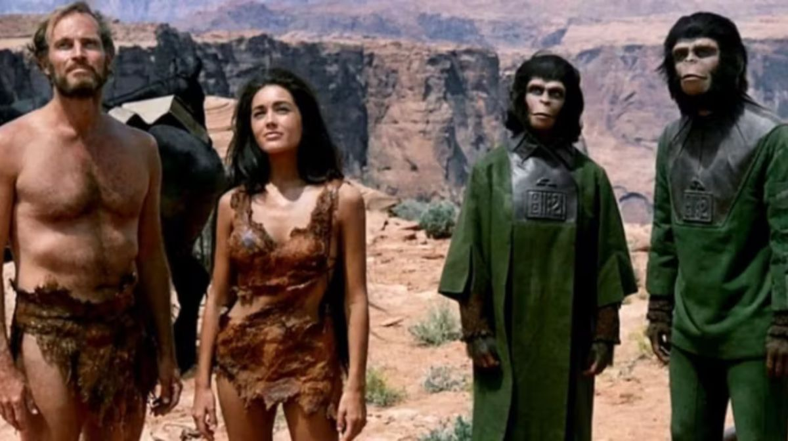
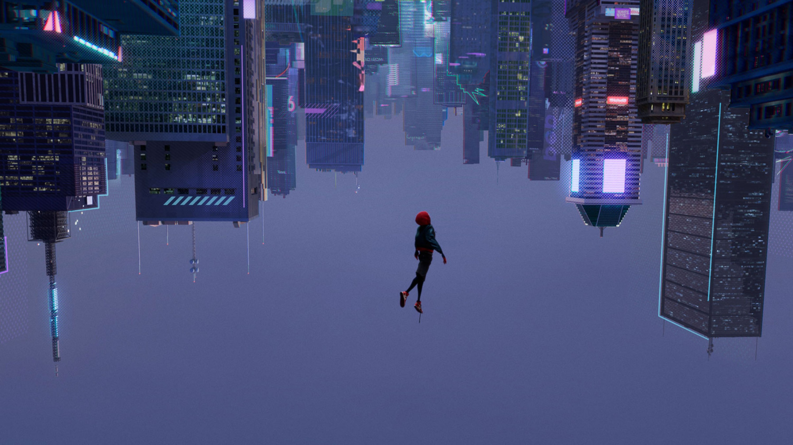
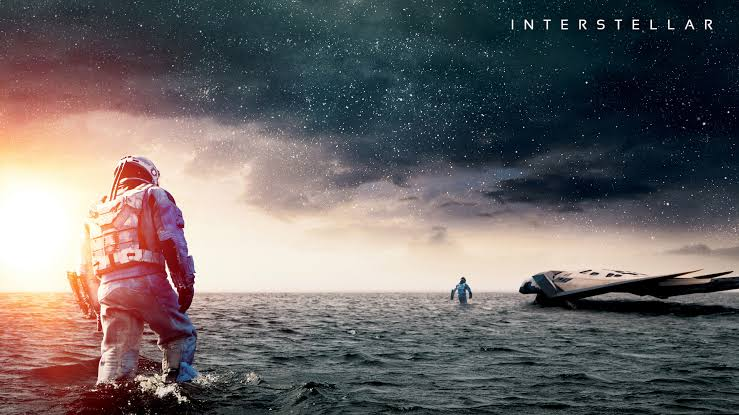
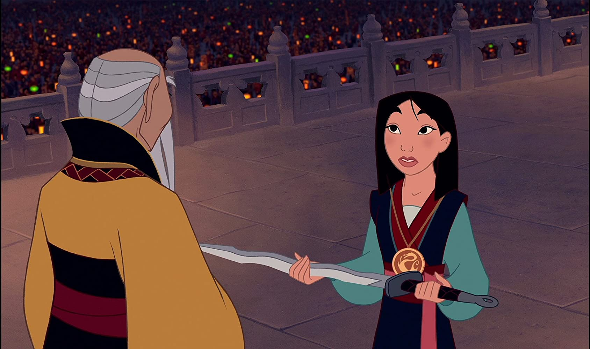

🎞️¡Bienvenid@ a nuestro blog!🎞️
Bienvenidos a este pequeño espacio dedicado al cine. Aquí reunimos algunas películas que, por distintos motivos, han dejado huella en la historia del séptimo arte o simplemente lograron conectar con nosotros. Esperamos que estas breves recomendaciones despierten tu curiosidad y, quizá, te animen a descubrir alguna de ellas.
"El planeta de los simios"
Frida

Después de un accidente espacial, un astronauta llega a un planeta donde los simios dominan la civilización y los humanos viven sometidos. Lo que comienza como una historia de supervivencia termina convirtiéndose en una reflexión sobre la sociedad, la ciencia y la naturaleza humana. Su desenlace sigue siendo uno de los más recordados del cine.
"Scott Pilgrim vs. the world"
Eva
Scott Pilgrim debe enfrentarse a los siete malvados exnovios de Ramona Flowers si quiere conquistar su corazón. La película combina comedia, romance y acción con una estética inspirada en los videojuegos y los cómics. Su estilo visual y su humor la convierten en una propuesta muy original.
"Spiderman Into the Spiderverse"
Jesús

Miles Morales descubre que no es el único Spider-Man cuando diferentes versiones del héroe llegan desde otros universos. Juntos deberán trabajar para proteger todas las realidades. Su innovadora animación y el desarrollo de sus personajes la han convertido en una de las películas más destacadas del género.
"Interestelar"
Steven

En 2067, una plaga está destruyendo las cosechas y alterando la atmósfera terrestre, amenazando la supervivencia de la humanidad. Joseph Cooper, un exingeniero y piloto de la NASA convertido en granjero, vive con su suegro Donald y sus hijos Tom y Murph. Cuando extraños patrones de polvo aparecen en la habitación de Murph, quien cree que un fantasma intenta comunicarse con ella, cuando Cooper le ayuda a analizarlos, descubre que es código binario con un mensaje que contiene coordenadas que los lleva a una instalación secreta de la NASA dirigida por el doctor Brand.
"Mulán"
Diana
